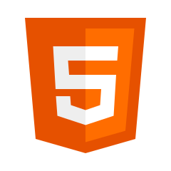
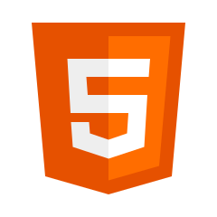

Michael Rosenberg

Full Stack Web Developer
PortfolioAbout
I'm a hungry and motivated full stack web developer with a business background, who thrives in a collaborative environment where I can utilize my strong communication and problem solving skills. My previous role in the Customer Experience space formally introduced me to the companies and technologies responsible for creating better, more seamless customer/user experiences, and this is what led me to pursue a career in software development. I'm seeking a new challenge that will grant me the opportunity to improve our digital experiences firsthand. Passionate about new adventures and a strong believer in never being too old to continue growing and learning new things.
Currently a JavaScript, React/Redux and Ruby on Rails developer with a strong desire to add more programming languages to my toolbelt. I am excited to bring my skill set to a team where together we can solve problems and create amazing digital products and services!
In my spare time, you can find me: rooting for my favorite sports teams (New York Giants, New York Mets, New Jersey Devils and Arsenal FC), enjoying new restaurants around NYC and exploring new countries around the world!
Skills
- Ruby on Rails
- JavaScript
- React
- Redux
- HTML
- CSS

 
